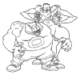
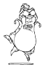

Since you probably know how to use the computer better than Mommy or Daddy, use their printer to print these simple black and white pictures of the cartoon characters from Space Jam, and color them in yourself!
Click on the small pictures below to see a bigger one that you can print out and color in.
 